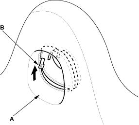

- Unzip the headrest portion of the seat-back cover (A), then remove the zipper (B) and remove the cover.

- Install the cover in the reverse order of removal and note the following items:
- Fit all the hooks of the headrest front trim into the holes in the headrest rear trim, then push on the headrest trim until the hooks snap into place.
- To prevent wrinkles when installing a seat-back cover, make sure the material is stretched evenly over the pad before securing the clips, hooks and hook springs.
- Make sure the rear seat access cable is routed properly.